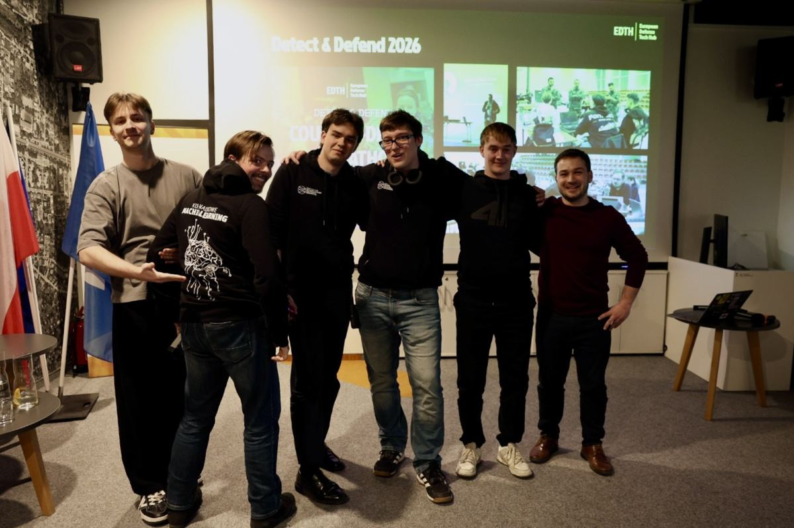
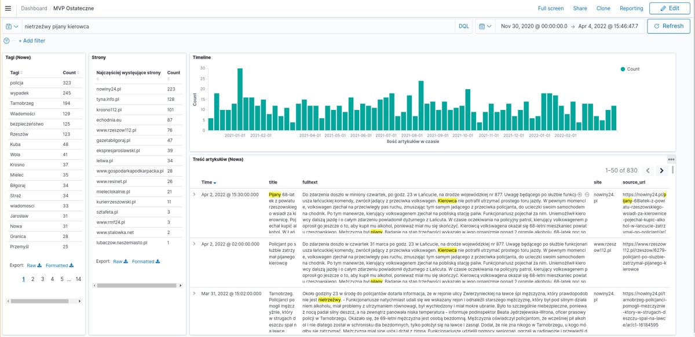
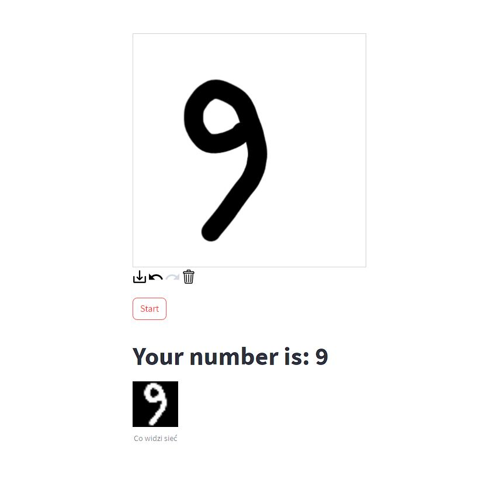
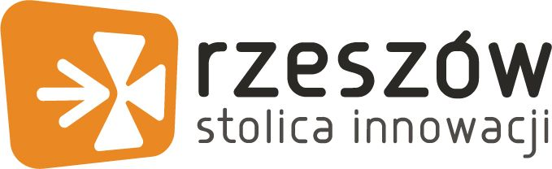

1.2× I miejsce na hackathonach w 2026
Uczenie maszynowe do niecodziennych problemów.
Koło Naukowe Machine Learning Politechniki Rzeszowskiej. Analiza danych, sieci neuronowe, wykrywanie dronów i algorytmy jazdy autonomicznej.
Partner strategiczny[Nazwa sponsora]
[LOGO SPONSORA]
O nas
Jesteśmy grupą studentów zafascynowanych analizą danych, uczeniem maszynowym i sieciami neuronowymi. Uczymy się w praktyce: na konkursach, hackathonach i we własnych projektach.
Poznaj koło- 2020
- rok założenia przy WMiFS
- 7
- nagród i wyróżnień w konkursach
- 2×
- I miejsce na międzynarodowych hackathonach w 2026
Z życia koła
Wszystkie wpisy (20)Osiągnięcia
Przewiń w bok →- 1.2026I miejsceSpaceShield HackDostępność transportu publicznego w Stalowej Woli z danych satelitarnych
- 1.2026I miejsceEDTH Detect & DefendSieć czujników mesh do wykrywania dronów
- PCI2026NagrodaPodkarpackie Centrum InnowacjiRozproszona sieć czujników wykrywających drony
- W2023WyróżnienieBITEHack | AIAnaliza zużycia energii w budynkach
- 2.2022II miejsceBITEHack | AIWykrywanie negatywnych emocji w sieci
- KoKoN2022NagrodaCyfryzacjaLARKFiD — Open Gov Data i aplikacje na GPU
- W2021WyróżnienieStRuNa — Debiut RokuWyróżnienie dla nowego koła naukowego
Każdy jest mile widziany
Dołącz do KNML
W zespole są głównie studenci Inżynierii i analizy danych, ale nie musisz studiować na WMiFS, żeby z nami działać.
- Wejdź na nasz serwer Discord
- Przyjdź na spotkanie koła
- Dołącz do projektu albo drużyny na hackathon
Projekty
Wszystkie projekty
Sieć czujników do wykrywania dronów
Rozproszona sieć czujników, m.in. akustycznych, w architekturze mesh, wykrywająca drony.
Transport publiczny z kosmosu
Analiza dostępności transportu publicznego w Stalowej Woli na danych satelitarnych i geoprzestrzennych.

LARKFiD
Baza wiedzy o regionie: zbieranie danych z sieci, przetwarzanie języka i wyszukiwarka OpenSearch.

MNIST Demo
Interaktywne demo pokazujące, jak sieć neuronowa rozpoznaje odręcznie pisane cyfry.
Partnerzy
[LOGO SPONSORA]

[LOGO POLITECHNIKI RZESZOWSKIEJ]